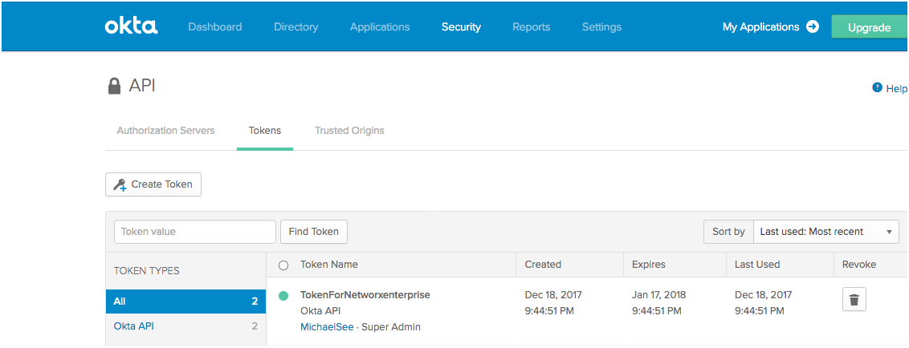
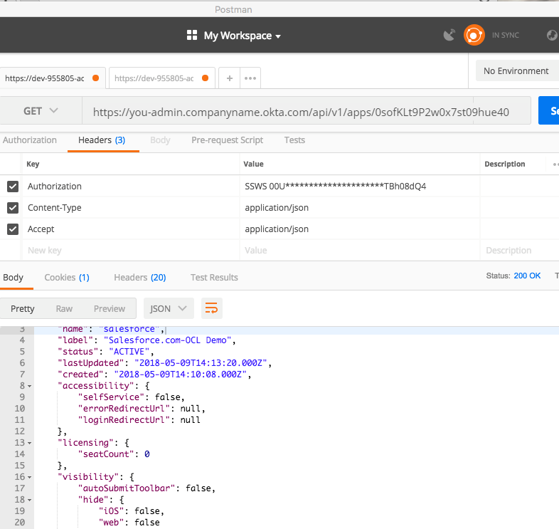
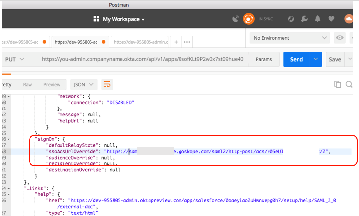

Configure the Okta ACS URL Override
After you configure a Saas application instance in Netskope, use an API request to modify the Okta App configuration to override the endpoint URL and use Netskope SAML reverse proxy.
Note
To complete these steps you need to get the SAML Proxy ACS URL from the Netskope UI. Go to Settings > Security Cloud Platform > Reverse Proxy > SAML. Click the magnifying glass icon next to your SAML account to open the Settings dialog. Copy the SAML Proxy ACS URL.
Log in to the Okta web UI using a super admin account.
Go to Security > API > Tokens to create a token. Enter a name, and then click Create Token.

Copy the token value and save it for later reference. After you close this window there is no way to view the token value again. When saved, click OK, got it. The token you just created is shown on the Tokens page.
 Go to Applications and select your SaaS application from the list. In this example we are using Salesforce.com. Identify your App ID, which is the code string shown shaded below in the URL.

Based on the Okta domain name and App ID, create a request URL to use in Postman (or other program) to connect to the SaaS application using this format
https://<okta.org.name>/api/v1/apps/<app_id>. For example:https://you-admin.companyname.okta.com/api/v1/apps/0sofKLt9P2w0x7.Open the Postman app and enter the request URL you created in the previous step, and then add these Header key-value pairs:
Key
Value
Authorization
SSWS (Add your API Key Here)
Content-Type
application/json
Accept
application/json

Click Send to see the output, and then copy the body of this GET request.
 Change GET to PUT in the dropdown, select Body, and then raw. Paste the body of the GET request into the blank field that opens.

Locate and update the key SsoAcsURLOverride value in the PUT request with the Netskope SAML Proxy ACS URL (copied from the Netskope UI).
 Click Send for the PUT request to push the update to your Okta app.
Log in to the app for which you just added the ACS URL override.

Confirm that the Application URL is now going through Netskope via reverse proxy.

The integration for Netskope SAML proxy with Okta for a SaaS application is complete.